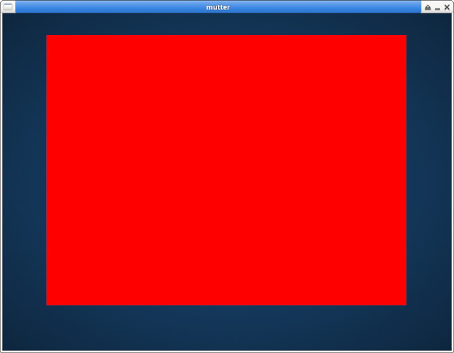

參考資訊：
https://jan.newmarch.name/Wayland/index.html
https://wayland.freedesktop.org/docs/html/apa.html
https://bugaevc.gitbooks.io/writing-wayland-clients/content/
main.c
#include <stdio.h>
#include <stdbool.h>
#include <string.h>
#include <unistd.h>
#include <fcntl.h>
#include <sys/mman.h>
#include <wayland-client.h>
#include <linux/input-event-codes.h>
#include "xdg-shell-client-protocol.h"
#define WIDTH 640
#define HEIGHT 480
#define STRIDE (WIDTH * 2)
#define SIZE (STRIDE * HEIGHT)
static bool configured = false;
static bool running = true;
struct wl_shm *shm = NULL;
struct wl_buffer *buf = NULL;
struct wl_display *dis = NULL;
struct wl_surface *surf = NULL;
struct wl_registry *reg = NULL;
struct wl_shm_pool *pool = NULL;
struct wl_compositor *comp = NULL;
struct xdg_surface *xdg_surf = NULL;
struct xdg_toplevel *xdg_toplevel = NULL;
struct xdg_wm_base *xdg_wm_base = NULL;
static void xdg_wm_base_handle_ping(void *data, struct xdg_wm_base *xdg_wm_base, uint32_t serial)
{
xdg_wm_base_pong(xdg_wm_base, serial);
}
static const struct xdg_wm_base_listener xdg_wm_base_listener = {
.ping = xdg_wm_base_handle_ping,
};
void cb_handle(void *dat, struct wl_registry *reg, uint32_t id, const char *intf, uint32_t ver)
{
if (strcmp(intf, wl_compositor_interface.name) == 0) {
comp = wl_registry_bind(reg, id, &wl_compositor_interface, 1);
}
else if (strcmp(intf, xdg_wm_base_interface.name) == 0) {
xdg_wm_base = wl_registry_bind(reg, id, &xdg_wm_base_interface, 1);
xdg_wm_base_add_listener(xdg_wm_base, &xdg_wm_base_listener, NULL);
}
else if (strcmp(intf, wl_shm_interface.name) == 0) {
shm = wl_registry_bind(reg, id, &wl_shm_interface, 1);
}
}
void cb_remove(void *dat, struct wl_registry *reg, uint32_t id)
{
}
struct wl_registry_listener cb = {
.global = cb_handle,
.global_remove = cb_remove
};
static void xdg_surface_handle_configure(void *data, struct xdg_surface *xdg_surface, uint32_t serial)
{
xdg_surface_ack_configure(xdg_surface, serial);
if (configured) {
wl_surface_commit(surf);
}
configured = true;
}
static const struct xdg_surface_listener xdg_surface_listener = {
.configure = xdg_surface_handle_configure,
};
static void xdg_toplevel_handle_close(void *data, struct xdg_toplevel *xdg_toplevel)
{
running = false;
}
static void noop(void *arg0, struct xdg_toplevel *arg1, int32_t arg2, int32_t arg3, struct wl_array *arg4)
{
}
static const struct xdg_toplevel_listener xdg_toplevel_listener = {
.configure = noop,
.close = xdg_toplevel_handle_close,
};
int main(int argc, char **argv)
{
dis = wl_display_connect(NULL);
reg = wl_display_get_registry(dis);
wl_registry_add_listener(reg, &cb, NULL);
wl_display_roundtrip(dis);
printf("comp = 0x%08x\n", comp);
surf = wl_compositor_create_surface(comp);
printf("surf = 0x%08x\n", surf);
xdg_surf = xdg_wm_base_get_xdg_surface(xdg_wm_base, surf);
printf("xdg_surf = 0x%08x\n", xdg_surf);
xdg_toplevel = xdg_surface_get_toplevel(xdg_surf);
xdg_surface_add_listener(xdg_surf, &xdg_surface_listener, NULL);
xdg_toplevel_add_listener(xdg_toplevel, &xdg_toplevel_listener, NULL);
wl_surface_commit(surf);
while (wl_display_dispatch(dis) != -1 && !configured) {
}
unlink("/tmp/shm");
int fd = open("/tmp/shm", O_RDWR | O_EXCL | O_CREAT);
ftruncate(fd, SIZE);
uint16_t *addr = mmap(NULL, SIZE, PROT_READ | PROT_WRITE, MAP_SHARED, fd, 0);
pool = wl_shm_create_pool(shm, fd, SIZE);
buf = wl_shm_pool_create_buffer(pool, 0, WIDTH, HEIGHT, STRIDE, WL_SHM_FORMAT_RGB565);
wl_shm_pool_destroy(pool);
printf("pool = %p\n", pool);
printf("buf = %p\n", buf);
printf("mmap = %p\n", addr);
int x = 0, y = 0;
uint16_t *p = addr;
for (y = 0; y < HEIGHT; y++) {
for (x = 0; x < WIDTH; x++) {
*p++ = 0xf800;
}
}
wl_surface_attach(surf, buf, 0, 0);
wl_surface_commit(surf);
wl_display_dispatch(dis);
wl_display_roundtrip(dis);
usleep(30000000);
xdg_toplevel_destroy(xdg_toplevel);
xdg_surface_destroy(xdg_surf);
wl_surface_destroy(surf);
wl_shm_destroy(shm);
wl_compositor_destroy(comp);
wl_registry_destroy(reg);
wl_display_disconnect(dis);
munmap(addr, SIZE);
close(fd);
return 0;
}
編譯、執行
$ wayland-scanner private-code /usr/share/wayland-protocols/stable/xdg-shell/xdg-shell.xml xdg-shell-protocol.c $ wayland-scanner client-header /usr/share/wayland-protocols/stable/xdg-shell/xdg-shell.xml xdg-shell-client-protocol.h $ mutter --nested --wayland & $ gcc main.c xdg-shell-protocol.c -o main -lwayland-client $ ./main
